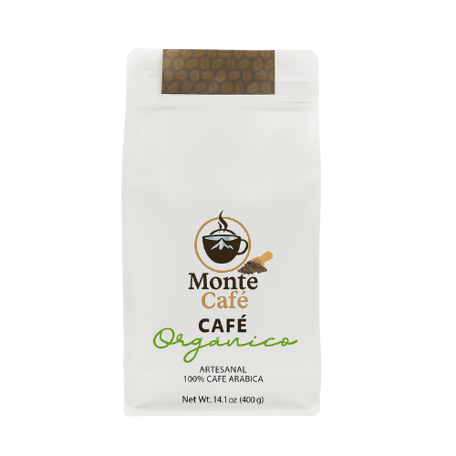
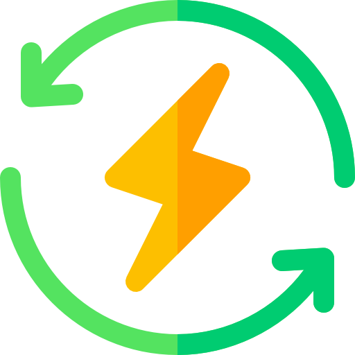

Disfrutá el aroma de un buen café

Tostado artesanal salvadoreño

Apoyamos al productor local

Pasión en cada grano
Sobre Monte Café
En Monte Café cultivamos más que granos: cultivamos pasión, tradición y sabor auténtico...
Desde pequeños caficultores hasta amantes del café, creemos en un proceso justo y sostenible...

☕ Beneficios del Café Monte Café

Energía Natural
Disfrutá de un impulso energético saludable gracias a nuestros granos seleccionados.
Rico en Antioxidantes
Protegé tu salud con cada taza: combate radicales libres de forma natural.
Apoyo Local
Con cada compra apoyás a caficultores salvadoreños que cultivan con pasión.
Detrás de cada taza
En Monte Café, cada grano cuenta una historia...
Nuestros métodos de cultivo son sostenibles...
“Monte Café es más que una marca...”
Desde la siembra hasta la taza, creemos que el café debe unir personas...
Nuestros pilares
- Cultivo sostenible
- Comercio justo
- Respeto por la tierra
- Apoyo a caficultores locales
- Calidad garantizada